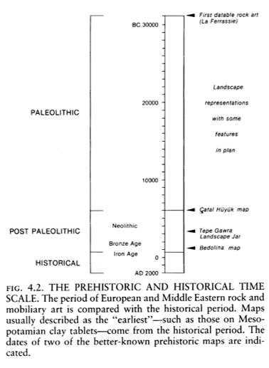
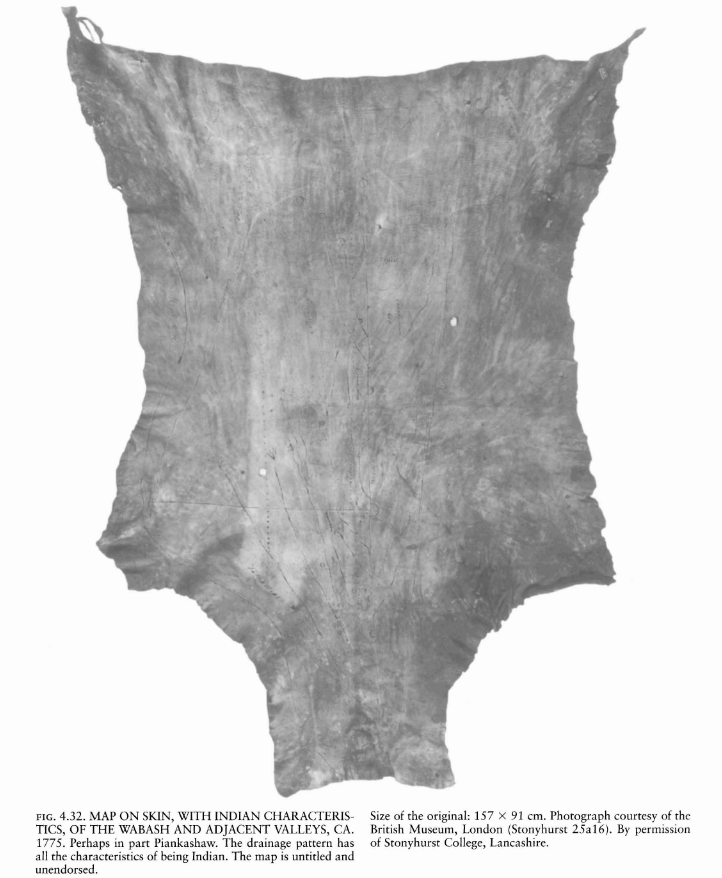
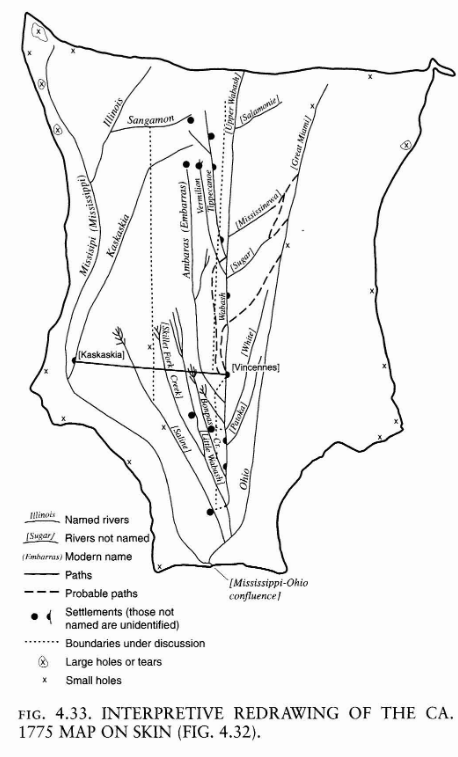
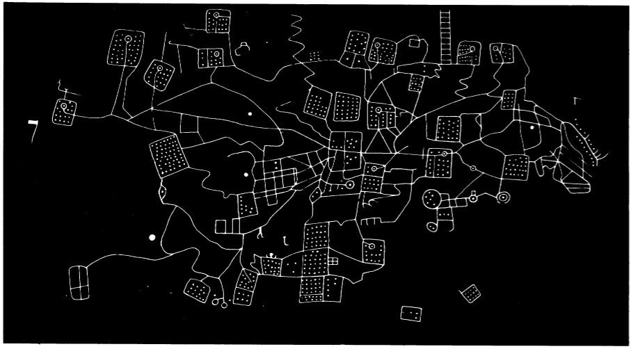

Pre-Historic Maps
Frequently depicted:
* Landscapes
* Hunting Grounds
* Villages
* Agricultural Plots

Pre-Historic Maps
Many are hard to recognize as maps
* Rock art, pottery & carvings
* Textiles, skins & bark
* Dance, movement, & gestures
Few Surviving Examples
Must rely on more modern analogues


Oldest Known Maps
Mammoth Tusk
Oldest known graphic depiction of space. Hunting landscape around the Dyje River Czechia 26,000 B.P.

Oldest Known Maps
Yurda
Stone engraving of Darling River basin with overland shortcuts. Australia 20,000 B.P.

Oldest Known Maps
Map Rock
Stone engraving of Snake River Valley Idaho 12,000 B.P.

"Urban" Plans

Çatalhöyük, a village Turkey, 8700 B.P.
"Urban" Plans
Bedolina Petroglyph, Italy, 4000 B.P.
"Urban" Plans

Nippur, Babylonia. Clay tablet town plan. Possibly the earliest map drawn to scale 3500 B.P.
World Maps

Babylonian World Map 2500 B.P.